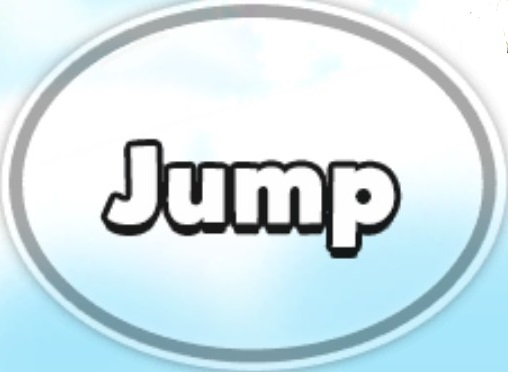
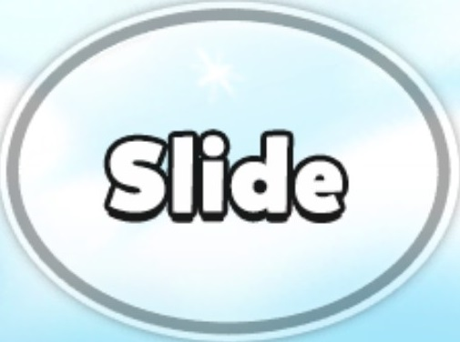
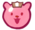
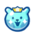

Cookies/Pets
Treasures
Gameplay
Lands
Cookies/Pets
Treasures
Gameplay
Lands
In the race to the Champions League, Cookies must avoid the obstacles and collect Jellies to skyrocket theirscore. The Cookie will constantly run across the screen, while the screen side scrolls with it. Obstacles constantly obtrude the Cookie's path, requiring them to slide/jump and avoid the obstacles. On both sides of the screen are a jump button and slide button that can be clicked to execute the command.
 Each land will have numerous themed obstacles that obtrude the Cookie's path. These obstacles include: tall obstacles, long obstacles, gaps, or simple traps on the ground. Depending on the obstacle, the Cookie will have to jump over it, or slide under it.
Each cookie has a health bar that gradually depletes as they run. Avoiding obstacles will ensure that they run for as far possible without falling too quickly. If a Cookie hits an obstacle, their energy will deplete by 20-40 energy points. Cookies can recover energy by collecting small/large potions. Some cookies also have special abilities which restore energy. Once Cookies run out of energy, they will fall and get a specific score, based on how many jellies were collected.
In order to gain trophies, players must enter a Trophy Race, where Cookies are entered with a pet to run. During a trophy race, a Cookie races with 9 other cookies that have entered. After around 8 minutes, the race will end and each individual score earned by a Cookie will be submitted. The Cookie with the most points will receive trophies and a golden chest. Upon gaining a certain amount of trophies, Cookies can advance to different lands and compete.

Bonustime is a special bonus that can be activated upon collecting each letter of the word during gameplay. Each Bonustime letter jelly will be scattered through out the page and will be found as the Cookie runs. When Bonustime is activated, the Cookie is transported to a special world where their pet carries them. During Bonustime, many bonuses and special jellies will appear, which can escalate the player's score very quickly.
Jellies are the things that Cookies collect while running to increase their score. Jellies will constantly be found when the Cookie is running. Simply having the Cookie run into the jelly will collect it. If the Cookie collects a powerup jelly, a special event will occur.
| Jelly | Picture | Points | Power |
| Classic Jelly | 999 | None | |
| Yellow Bear Jelly | 2,222 | None | |
| Pink Bear Jelly |  | 3,333 | None |
| Giant Bear Jelly | 5,555 | None | |
| Frozen Bear Jelly |  | 4,222 | None |
| Giant Star Jelly | 4,444 | None | |
| Silver Coin | 333 | None | |
| Giant Silver Coin | 678 | None | |
| Gold Coin | 555 | None | |
| Bear Jelly Party | 0 | Turns all Classic Jellies into Yellow Bear Jellies for a short time | |
| Magnet Jelly | 0 | Magnetizes all jellies towards Cookie | |
| Giant Potion | 0 | Turns Cookie into an invincible giant | |
| Blast Jelly Potion | 0 | Cookie bursts into flames and runs very fast | |
| Coin Magic | 0 | Turns all obstacles into Coin Jellies | |
| Bonus Time Jelly | 0 | Bonustime instantly activates |